Top 23 quán cà phê đẹp ở Đà Lạt khiến giới trẻ mê mẩn nhất hiện nay

Mục lục bài viết
- 1. Trên Đồi Có Mây – Tiệm cà phê săn mây đẹp nhất Đà Lạt
- 2. Quyen Coffee – Quán cà phê đẹp và chill ở Đà Lạt
- 3. Tiệm cà phê Cheo Veooo – Quán cà phê đẹp ở Đà Lạt
- 4. Tiệm cà phê trứng Cô Ba – Quán cà phê trứng nổi tiếng ở Đà Lạt
- 5. The Diff House’s – Quán cà phê đẹp, lãng mạn ở Đà Lạt
- 6. Cafe Tỏi Đen – Quán cà phê độc đáo ở Đà Lạt
- 7. Góc của Tùng – Quán cà phê Đà Lạt chill ngắm mây, săn bình minh cực đẹp
- 8. Homuda – Quán cafe Đà Lạt phong cách Nhật Bản đẹp như phim
- 9. Pura Vida Dalat – Quán cafe HOT ở Đà Lạt với không gian mở cực chill
- 10. Rừng Na Uy – Quán cà phê view đẹp Đà Lạt mang phong cách Nhật
- 11. Émai Dalat – Quán cafe ngon ở Đà Lạt với không gian Địa Trung Hải lãng mạn
- 12. Khu Vườn Mùa Hè – Quán cà phê đẹp ở Đà Lạt ngập tràn sắc hoa
- 13. Tiệm Cà Phê Bình Minh Ơi – Quán cà phê Đà Lạt phong cách cổ điển, mộc mạc
- 14. Still Café – Quán cà phê ở Đà Lạt phong cách vintage, view đẹp và yên tĩnh
- 15. Túi Mơ To – Quán cà phê sống ảo cực chill giữa thiên nhiên Đà Lạt
- 16. Đợi Một Người – Quán cà phê chữa lành giữa lòng Đà Lạt
- 17. Sitooterie – Quán cà phê sang chảnh tone đen giữa rừng thông
- 18. Him Cafe – Quán cà phê mở cửa tối, lý tưởng để chill ban đêm
- 19. Kong Coffee – Quán cà phê Đà Lạt săn mây nổi tiếng
- 20. Cafe Panorama Dalat – Quán cà phê Đà Lạt ngắm cảnh thành phố từ trên cao
- 21. Tiệm cà phê Hoàng Hôn Chiều – Điểm săn mây lý tưởng ở Trại Mát
- 22. Gâu Garden – Quán cà phê Đà Lạt view núi đồi, đồ uống chất lượng
- 23. Horizon Coffee – Quán cà phê Đà Lạt view đồi thông cực chill
- 🔥 Tiệm Nướng & Chill Xóm Lèo – Điểm đến ăn uống và thư giãn lý tưởng sau khi khám phá và thưởng thức những quán cà phê đẹp ở Đà Lạt
Dalat không thiếu những quán cà phê mang đậm chất thơ, nơi bạn có thể tìm thấy sự bình yên giữa thiên nhiên trong lành, thưởng thức tách cà phê thơm lừng giữa khung cảnh lãng mạn. Từ Cheo Veooo, Góc của Tùng cho đến Pura Vida Dalat – mỗi quán đều có nét riêng độc đáo khiến ai ghé một lần cũng lưu luyến chẳng muốn rời.
1. Trên Đồi Có Mây – Tiệm cà phê săn mây đẹp nhất Đà Lạt
📍 Địa chỉ: Cua Cây Mai, xã Xuân Thọ
📞 SĐT: 0339337693
🕗 Giờ mở cửa: 05h00 – 21h00
Nếu bạn muốn săn mây và tận hưởng không gian trong lành ở Đà Lạt, Tiệm cà phê Trên Đồi Có Mây là lựa chọn không thể bỏ qua. Nằm ở vị trí đắc địa, quán sở hữu tầm nhìn rộng mở, giúp bạn dễ dàng đắm chìm vào những buổi bình minh mờ ảo với biển mây bồng bềnh. Menu quán đa dạng, từ các món cà phê đến thức uống khác, tha hồ cho bạn chọn lựa theo sở thích.
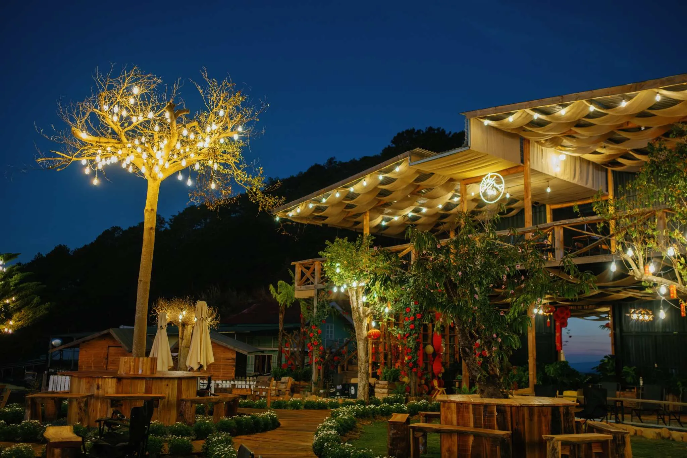
2. Quyen Coffee – Quán cà phê đẹp và chill ở Đà Lạt
📍 Địa chỉ: Số 7 Cô Giang, phường 9
📞 SĐT: 0965521109
🕗 Giờ mở cửa: 06h00 – 15h00
Quyen Coffee là một trong những quán cà phê đẹp ở Đà Lạt nổi tiếng với không gian nhỏ xinh, ấm cúng. Đây là nơi phù hợp để tận hưởng khoảnh khắc yên bình cùng ly cà phê thơm ngon và hương vị trà thảo mộc đặc trưng.
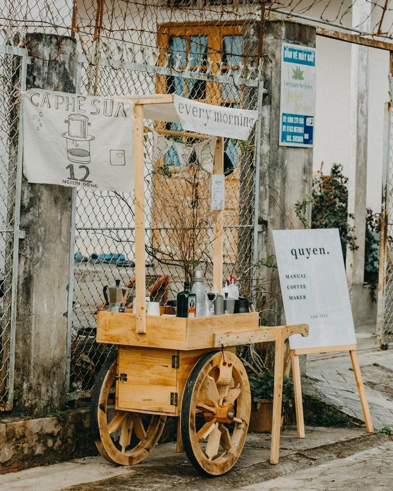
3. Tiệm cà phê Cheo Veooo – Quán cà phê đẹp ở Đà Lạt
📍 Địa chỉ: Hẻm Dã Chiến, 116 Hùng Vương, phường 11
📞 SĐT: 0938716394
Cheo Veooo là một trong những quán cà phê có view đẹp ở Đà Lạt, nằm giữa lưng chừng núi với không gian hoài niệm, bình yên. Tại đây, bạn có thể săn mây và ngắm hoàng hôn, tạo nên trải nghiệm khó quên khi đến thành phố ngàn hoa.
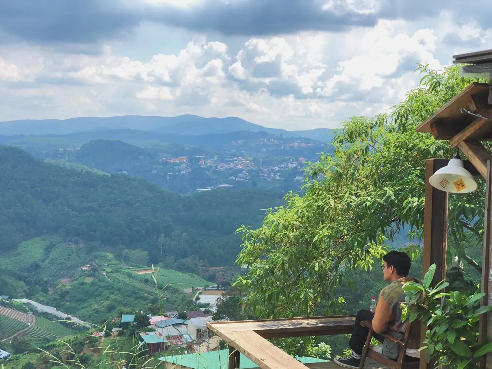
4. Tiệm cà phê trứng Cô Ba – Quán cà phê trứng nổi tiếng ở Đà Lạt
📍 Địa chỉ: 105 Hai Bà Trưng, phường 6
📞 SĐT: 0945209079
Tiệm cà phê trứng Cô Ba là điểm dừng chân quen thuộc của nhiều du khách khi đến Đà Lạt. Quán có không gian tối giản, ấm cúng, cùng âm nhạc nhẹ nhàng giúp bạn thư giãn và thưởng thức ly cà phê trứng béo ngậy đặc sắc.
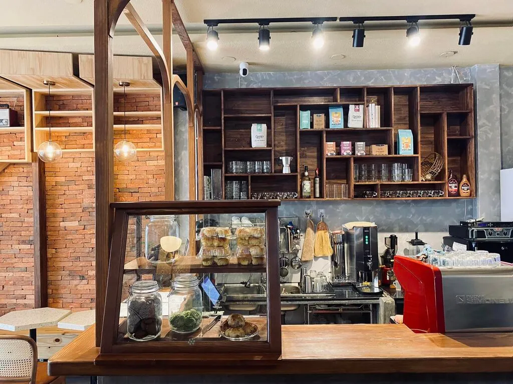
5. The Diff House’s – Quán cà phê đẹp, lãng mạn ở Đà Lạt
📍 Địa chỉ: 66/3 Đất Làng, xã Xuân Trường
📞 SĐT: 0917493992
🕗 Giờ mở cửa: 05h30 – 18h00
The Diff House’s được biết đến như một quán cà phê đẹp và lãng mạn tại Đà Lạt, với phong cách thiết kế tối giản, không gian ấm cúng và cơ hội săn mây tuyệt vời, mang đến sự thư thái cho khách đến thưởng thức cà phê.
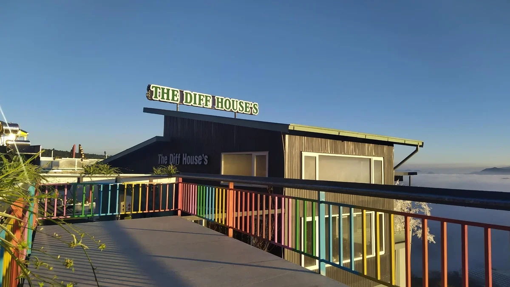
6. Cafe Tỏi Đen – Quán cà phê độc đáo ở Đà Lạt
📍 Địa chỉ: 318 Bùi Thị Xuân, phường 8
📞 SĐT: 0968115005
🕗 Giờ mở cửa: 07h00 – 22h30
Cafe Tỏi Đen là quán cà phê độc đáo tại trung tâm Đà Lạt, thu hút giới trẻ với món cà phê pha tỏi đen lạ miệng. Quán có view đẹp, không gian rộng rãi, rất thích hợp để bạn tận hưởng những buổi sáng se lạnh với ly cà phê thơm nồng.
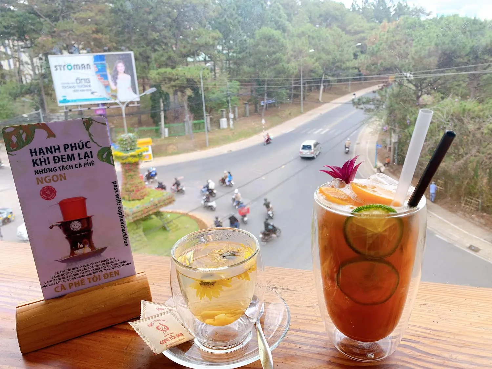
7. Góc của Tùng – Quán cà phê Đà Lạt chill ngắm mây, săn bình minh cực đẹp
📍 Địa chỉ: Đường 3/4, phường 3
📞 Số điện thoại: 0772500212
Nếu bạn đang tìm một quán cà phê chill ở Đà Lạt để ngắm mây trôi bồng bềnh, “Góc của Tùng” là cái tên không nên bỏ qua. Nằm giữa thiên nhiên trong lành, quán sở hữu không gian mở rộng với nhiều góc chụp ảnh sống ảo cực chất. Từ sân trước, ban công cho đến sân sau, nơi đâu cũng có thể ngắm bình minh rực rỡ hay khoảnh khắc hoàng hôn lãng mạn.
Với thiết kế mộc mạc và đậm chất Đà Lạt, Góc của Tùng luôn mang đến cảm giác an yên và nhẹ nhàng cho những ai ghé qua.
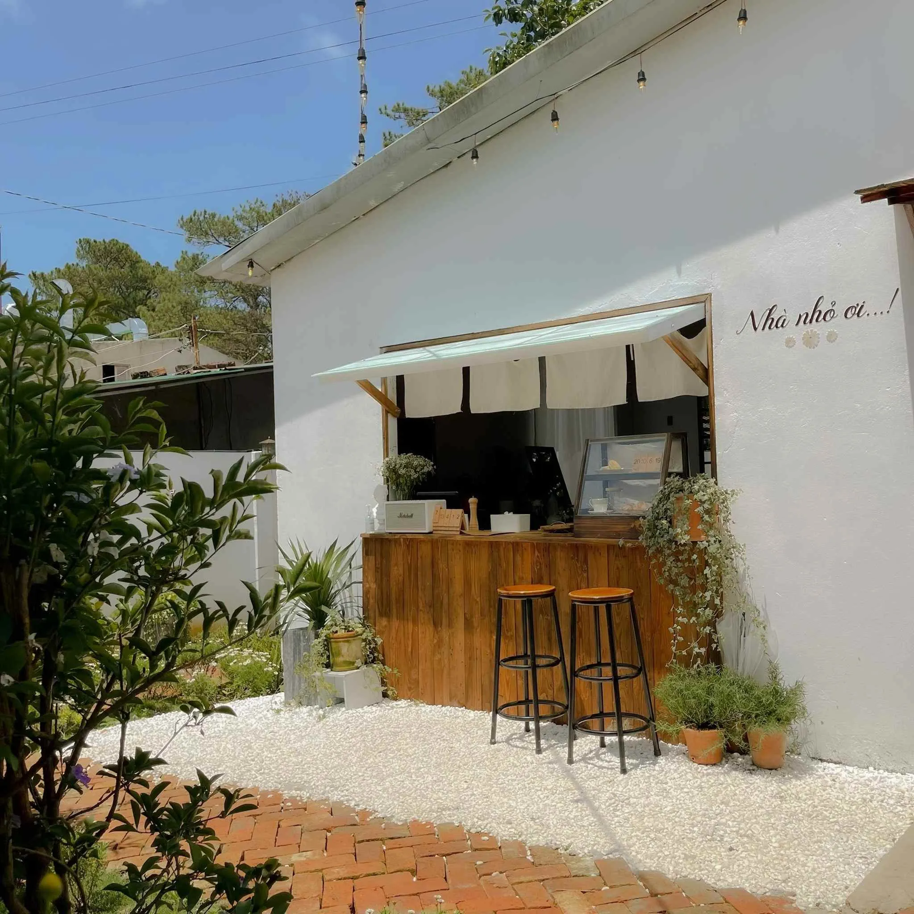
8. Homuda – Quán cafe Đà Lạt phong cách Nhật Bản đẹp như phim
📍 Địa chỉ: 40 Mai Anh Đào, phường 8
📞 Số điện thoại: 0933466380
🕗 Giờ mở cửa: 08h00 – 19h00
Homuda là một quán cà phê đẹp ở Đà Lạt đậm chất Nhật Bản, mang đến cho du khách không gian thanh bình và tinh tế. Mỗi góc nhỏ tại đây đều được bài trí theo phong cách tối giản nhưng đầy chất thơ, từ khu vườn nhỏ, góc ngoài trời cho đến tầng gác gỗ mộc mạc.
Ngoài không gian tuyệt vời để check-in, Homuda còn phục vụ nhiều loại đồ uống hấp dẫn, từ cà phê nguyên chất đến trà hoa và matcha đúng chuẩn Nhật. Đây là địa điểm lý tưởng cho những ai yêu thích phong cách “wabi-sabi” và sự nhẹ nhàng của xứ sở mặt trời mọc giữa lòng Đà Lạt.
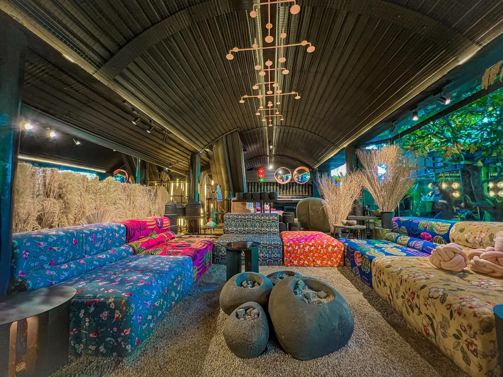
9. Pura Vida Dalat – Quán cafe HOT ở Đà Lạt với không gian mở cực chill
📍 Địa chỉ: Hẻm 108 Hùng Vương, phường 11
📞 Số điện thoại: 0936115171
🕗 Giờ mở cửa: 08h00 – 20h00
Pura Vida Dalat là một trong những quán cafe HOT ở Đà Lạt nhờ không gian rộng rãi, thoáng đãng và hòa mình cùng thiên nhiên. Với hơn 90% diện tích là ngoài trời, quán luôn đón nhận ánh nắng tự nhiên và không khí trong lành, cực kỳ thích hợp cho những ai muốn tìm về sự thư giãn, thoải mái.
Tại Pura Vida, bạn có thể vừa nhâm nhi cà phê vừa ngắm hoàng hôn lãng mạn từ những triền đồi xa xa – một trải nghiệm khó quên khi đến Đà Lạt.
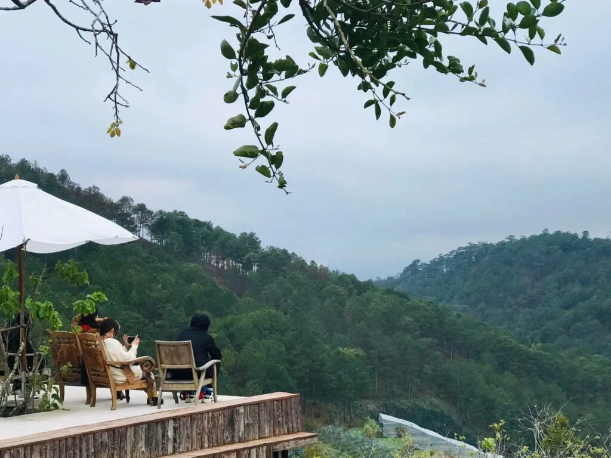
10. Rừng Na Uy – Quán cà phê view đẹp Đà Lạt mang phong cách Nhật
📍 Địa chỉ: 118 Hùng Vương, phường 11
📞 Số điện thoại: 0979888850
🕗 Giờ mở cửa:
-
Thứ 2 – Thứ 5: 08h00 – 22h00
-
Thứ 6 – Thứ 7: 08h00 – 23h00
-
Chủ nhật: 08h00 – 22h30
Rừng Na Uy là một quán cà phê view đẹp ở Đà Lạt mang đậm hơi thở Nhật Bản. Không gian quán ấm cúng với tông màu nâu trầm, nội thất gỗ, rèm Noren truyền thống và tiểu cảnh hoa cúc tạo nên khung cảnh vừa tinh tế vừa nghệ thuật.
Quán sở hữu view thung lũng cực kỳ lãng mạn, rất lý tưởng để check-in cùng người thương hoặc đơn giản là tận hưởng chút yên bình của phố núi.
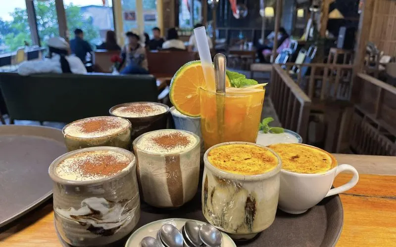
11. Émai Dalat – Quán cafe ngon ở Đà Lạt với không gian Địa Trung Hải lãng mạn
📍 Địa chỉ: 88 Hoàng Hoa Thám, phường 10
📞 Số điện thoại: 0263 357 7246
🕗 Giờ mở cửa: 07h30 – 22h00 (đóng cửa thứ 5 hàng tuần)
Émai Dalat không chỉ là quán cafe ngon ở Đà Lạt mà còn là nơi mang đến trải nghiệm ẩm thực Ý đúng nghĩa trong một không gian tinh tế, ấm cúng. Từ cổng hoa dẫn lối đến khoảng sân nhỏ phủ đầy cây xanh, mọi chi tiết đều được chăm chút tỉ mỉ.
Nội thất tối giản, ánh sáng nhẹ và mùi hương thảo mộc thoang thoảng tạo nên không gian vô cùng lãng mạn, rất thích hợp cho những buổi hẹn hò hoặc thưởng trà một mình giữa chiều mưa Đà Lạt.
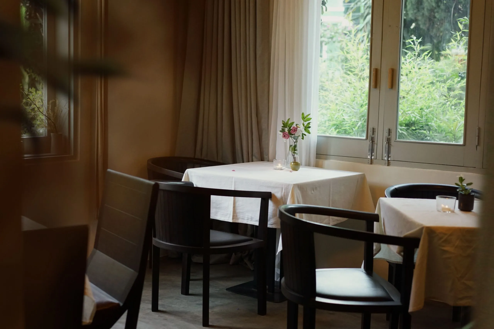
12. Khu Vườn Mùa Hè – Quán cà phê đẹp ở Đà Lạt ngập tràn sắc hoa
📍 Địa chỉ: Số 27 Hẻm 1 Đặng Thái Thân, phường 3
📞 Số điện thoại: 0936525327
🕗 Giờ mở cửa: 08h00 – 19h00
Đúng như tên gọi, Khu Vườn Mùa Hè là quán cafe đẹp ở Đà Lạt khiến ai cũng “say nắng” từ cái nhìn đầu tiên. Từ lối vào rợp bóng hoa râm bụt cho đến khu vườn xanh mướt phía sau, nơi đây mang đến cảm giác như lạc bước giữa vườn cổ tích.
Quán được thiết kế mở, hòa quyện với thiên nhiên và có nhiều góc nhìn ra thung lũng tuyệt đẹp – một nơi lý tưởng để thưởng thức tách cà phê nóng trong không khí lành lạnh của phố núi.
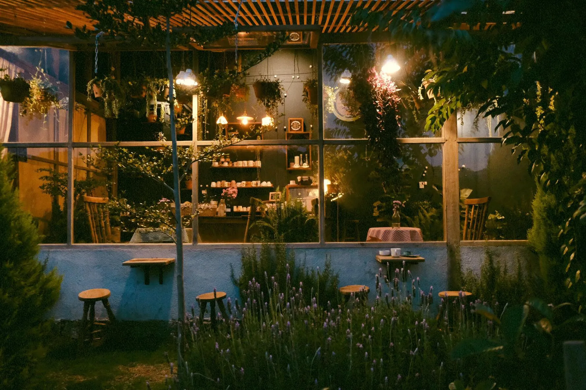
13. Tiệm Cà Phê Bình Minh Ơi – Quán cà phê Đà Lạt phong cách cổ điển, mộc mạc
📍 Địa chỉ: 89 Hoàng Hoa Thám, phường 10
📞 Số điện thoại: 0925903634
Tiệm Cà Phê Bình Minh Ơi là một quán cà phê đẹp ở Đà Lạt mang đậm phong cách cổ điển với nội thất gỗ mộc, sân vườn rực rỡ hoa cúc họa mi và không gian nhuốm màu xưa cũ.
Nơi đây đặc biệt phù hợp cho những ai yêu thích sự hoài niệm, bình yên và muốn có những tấm ảnh vintage nhẹ nhàng. Một tách cà phê nóng giữa khu vườn nắng sớm, tiếng chim hót líu lo – đó chính là Đà Lạt trong tim nhiều người.
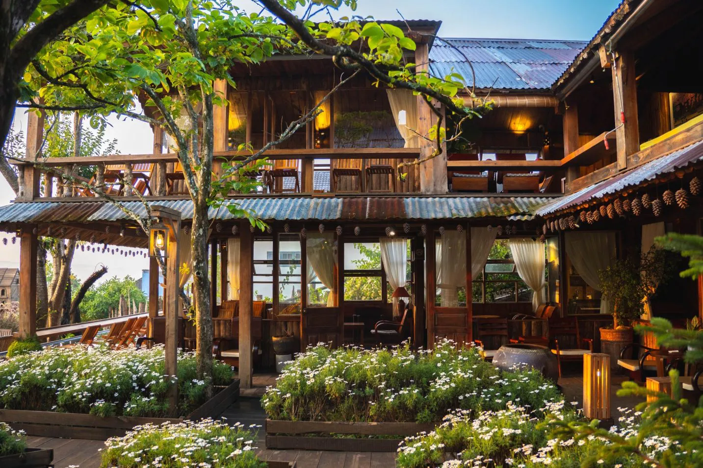
14. Still Café – Quán cà phê ở Đà Lạt phong cách vintage, view đẹp và yên tĩnh
📍 Địa chỉ: 59 Nguyễn Trãi, P.9 và 106 đường 3/2, P.1
📞 SĐT: 0344 626 702
🕗 Giờ mở cửa: 08h00 – 21h00
Nếu bạn đang tìm kiếm một điểm dừng chân nhẹ nhàng để thư giãn và thưởng thức cà phê trong không gian cổ điển, thì Still Café là lựa chọn lý tưởng. Không gian quán được thiết kế theo phong cách hoài niệm, với nội thất gỗ và nhiều cây xanh tạo cảm giác bình yên. Ánh sáng vàng nhẹ cùng những lọ hoa nhỏ trên bàn mang đến sự ấm áp và gần gũi cho du khách.
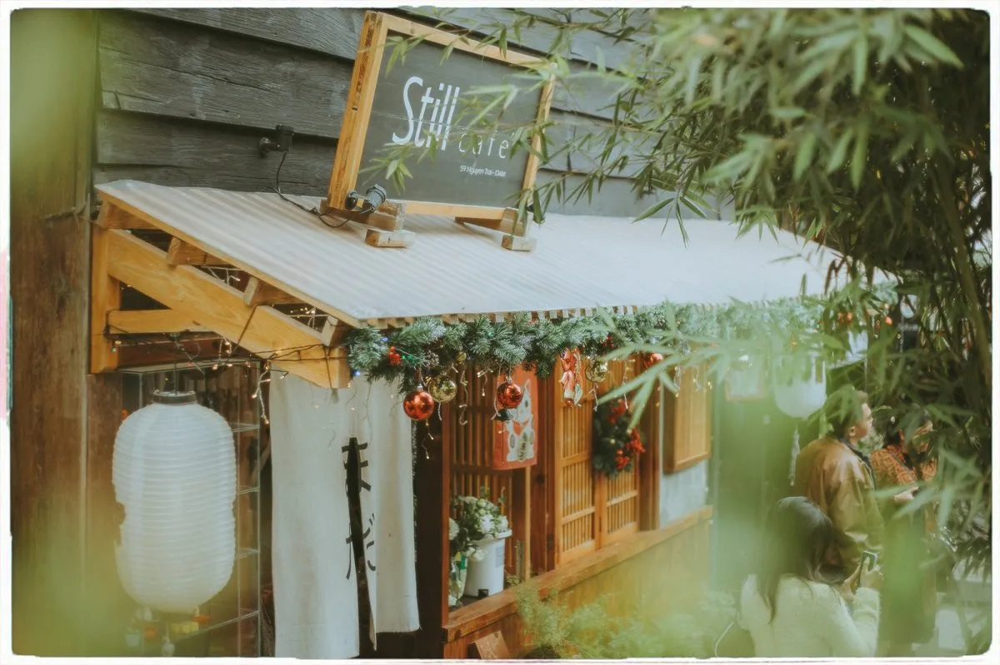
15. Túi Mơ To – Quán cà phê sống ảo cực chill giữa thiên nhiên Đà Lạt
📍 Địa chỉ: Hẻm 31 Sào Nam, P.11
📞 SĐT: 0978 476 942
🕗 Giờ mở cửa: 07h45 – 21h30
Túi Mơ To nổi bật với khuôn viên rộng rãi, nhiều cây xanh và góc check-in cực nghệ. Nơi đây không chỉ có vườn cúc họa mi tinh khôi, mà còn mang đến cảm giác an nhiên với không gian yên tĩnh, ánh đèn vàng ấm và kiến trúc mộc mạc. Một không gian lý tưởng để thả hồn giữa phố núi.

16. Đợi Một Người – Quán cà phê chữa lành giữa lòng Đà Lạt
📍 Địa chỉ: 24 Yersin, P.10
📞 SĐT: 0868 708 025
🕗 Giờ mở cửa: 07h30 – 22h00
Ẩn mình trong một khu vườn nhỏ xinh, Đợi Một Người được biết đến như một “ốc đảo” yên bình dành cho tâm hồn cần được vỗ về. Kiến trúc đậm chất hoài cổ cùng không gian thơ mộng giúp nơi đây trở thành điểm đến lý tưởng cho những ai yêu sự tĩnh lặng và sâu lắng.

17. Sitooterie – Quán cà phê sang chảnh tone đen giữa rừng thông
📍 Địa chỉ: Hẻm 2/35 Khởi Nghĩa Bắc Sơn, P.10
📞 SĐT: 0327 113 054
🕗 Giờ mở cửa: 08h00 – 19h00
Sitooterie gây ấn tượng mạnh bởi thiết kế hiện đại với tone đen chủ đạo. Quán có không gian mở rộng rãi, ánh sáng tự nhiên len lỏi qua từng ô cửa và sắc xanh của cây cối khiến quán trở nên sinh động và dễ chịu.
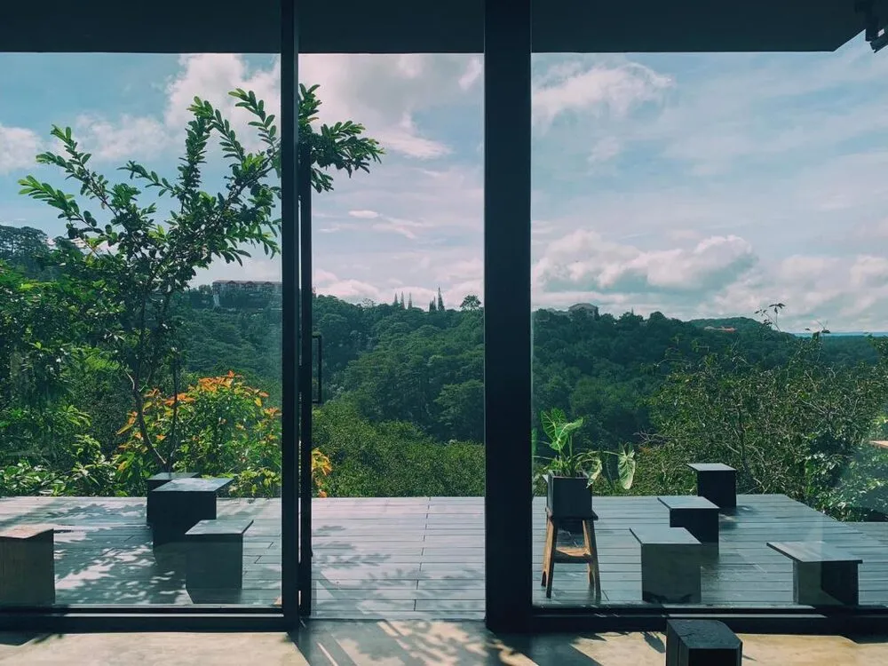
18. Him Cafe – Quán cà phê mở cửa tối, lý tưởng để chill ban đêm
📍 Địa chỉ: Hẻm 2/19 Khởi Nghĩa Bắc Sơn, P.10
📞 SĐT: 0939 862 665
🕗 Giờ mở cửa: 08h00 – 22h00
Him Cafe là điểm đến lý tưởng để ngắm Đà Lạt về đêm trong không gian lãng mạn. Quán được thiết kế mang hơi hướng cổ điển, mộc mạc và rất yên bình. Bạn có thể vừa thưởng thức cà phê, vừa tận hưởng những cuộc trò chuyện ấm áp cùng bạn bè.
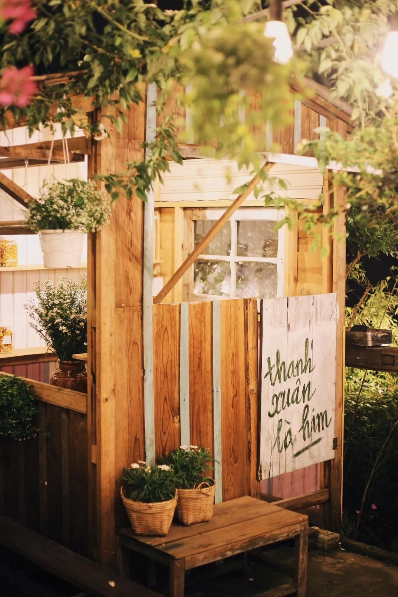
19. Kong Coffee – Quán cà phê Đà Lạt săn mây nổi tiếng
📍 Địa chỉ: Đồi Dã Chiến, P.11
Ẩn mình giữa đồi thông, Kong Coffee là nơi tuyệt vời để ngắm mây và đắm chìm trong thiên nhiên. Quán mang phong cách mộc mạc, giản dị nhưng đầy chất thơ. Đây là một trong những điểm check-in lý tưởng cho các tín đồ yêu thiên nhiên và mê chụp ảnh.
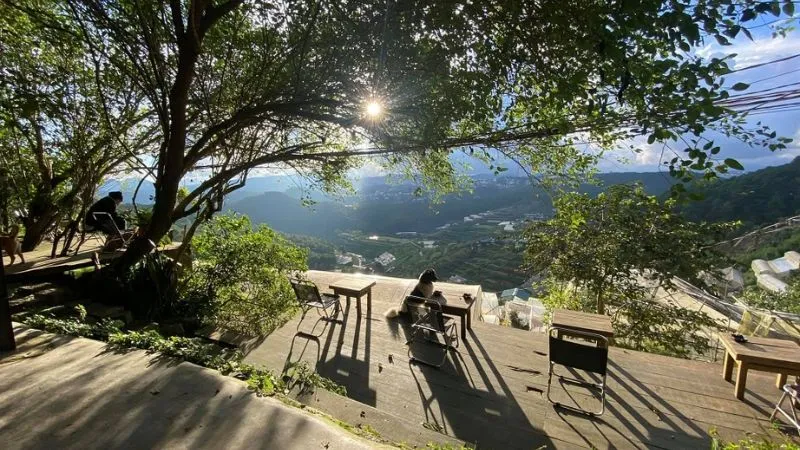
20. Cafe Panorama Dalat – Quán cà phê Đà Lạt ngắm cảnh thành phố từ trên cao
📍 Địa chỉ: Vòng xoay Trại Mát, đường Hùng Vương, P.11
📞 SĐT: 0937 772 350
Panorama Dalat tọa lạc trên đồi cao, là nơi hoàn hảo để ngắm toàn cảnh thiên nhiên hùng vĩ. Thiết kế quán mang phong cách mở, đón ánh sáng tự nhiên, rất thích hợp để ngồi nhâm nhi ly cà phê và ngắm nhìn thành phố từ xa.
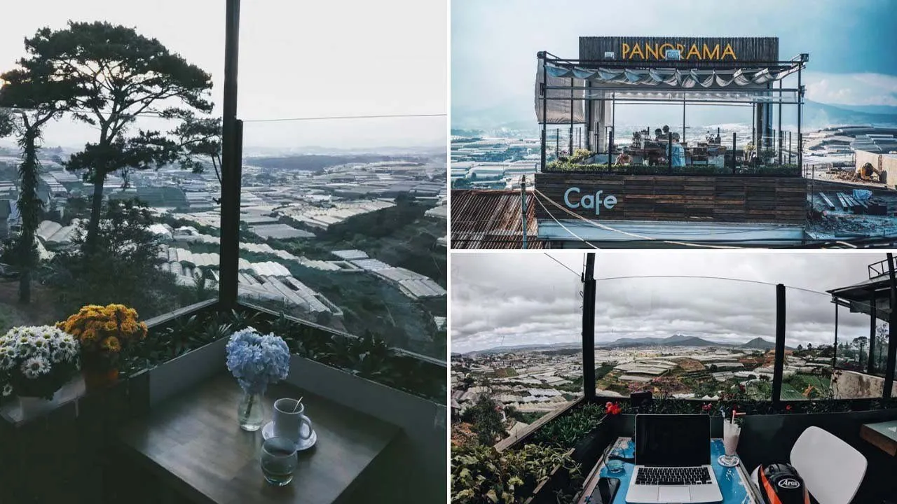
21. Tiệm cà phê Hoàng Hôn Chiều – Điểm săn mây lý tưởng ở Trại Mát
📍 Địa chỉ: Dốc số 9, Trại Mát, P.11
Tiệm cà phê Hoàng Hôn Chiều nằm nép mình giữa đồi cao, nơi có view cực đẹp để ngắm bình minh và hoàng hôn. Không gian tĩnh lặng, thoáng đãng, rất thích hợp để thư giãn và trò chuyện cùng bạn bè trong khung cảnh mộng mơ của Đà Lạt.
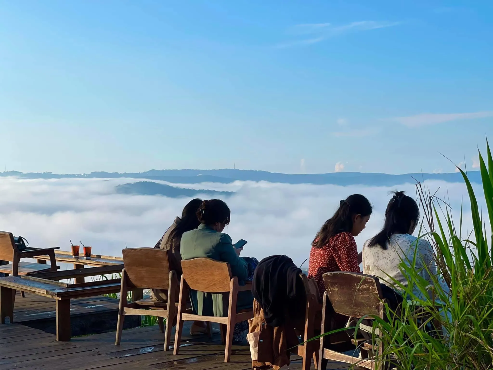
22. Gâu Garden – Quán cà phê Đà Lạt view núi đồi, đồ uống chất lượng
📍 Địa chỉ: 2/2 Trần Quang Diệu, P.10
📞 SĐT: 0988 651 357
Với view đồi núi rộng lớn và không gian mở gần gũi với thiên nhiên, Gâu Garden là điểm đến hấp dẫn cho những ai yêu sự tĩnh lặng. Đặc biệt, đồ uống ở đây được pha chế thủ công theo công thức riêng, mang đến hương vị khó quên cho thực khách.
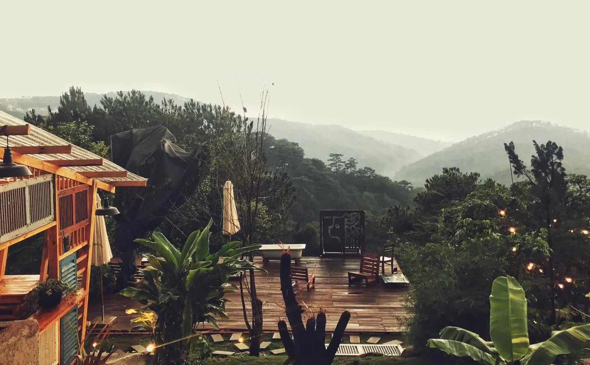
23. Horizon Coffee – Quán cà phê Đà Lạt view đồi thông cực chill
📍 Địa chỉ: Hẻm 31/6 đường 3/4, P.3
📞 SĐT: 0975 663 339
🕗 Giờ mở cửa: 07h00 – 20h00
Nằm lưng chừng sườn đồi, Horizon Coffee là nơi bạn có thể tận hưởng trọn vẹn vẻ đẹp của rừng thông Đà Lạt. Không gian thơ mộng cùng không khí trong lành nơi đây sẽ khiến bạn muốn dừng chân thật lâu để cảm nhận sự an yên nơi thành phố mờ sương.
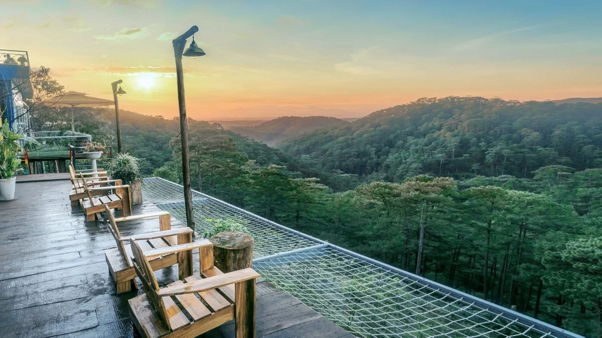
🔥 Tiệm Nướng & Chill Xóm Lèo – Điểm đến ăn uống và thư giãn lý tưởng sau khi khám phá và thưởng thức những quán cà phê đẹp ở Đà Lạt

Sau khi khám phá và thưởng thức những quán cafe view đẹp, đừng quên ghé qua Tiệm Nướng & Chill Xóm Lèo để tận hưởng một bữa ăn ngon lành giữa không gian ấm cúng. Quán tọa lạc tại 113 Huỳnh Tấn Phát, Phường 11, Đà Lạt, rất thuận tiện cho du khách.
Tại sao nên chọn Tiệm Nướng & Chill Xóm Lèo?
Không gian chill: Với phong cách bài trí mộc mạc nhưng không kém phần tinh tế, quán mang lại cảm giác gần gũi, thân thiện.
Món ăn hấp dẫn: Đặc biệt với thực đơn nướng đa dạng, từ thịt bò, gà, đến hải sản tươi ngon, được tẩm ướp gia vị đậm đà.
Dịch vụ tận tình: Đội ngũ nhân viên nhiệt tình, luôn sẵn sàng phục vụ và mang đến trải nghiệm tốt nhất cho khách hàng.
Thông tin liên hệ:
📌 Địa chỉ: 113 Huỳnh Tấn Phát, Phường 11, Đà Lạt, Lâm Đồng 67000
📩 Inbox: https://m.me/nuongxomleo
📍 Google Map: https://maps.app.goo.gl/W4ygihLS8LQ1YiSK8
📞 Hotline: 076.45.27.336 – 08.99.42.84.34 – 0902.91.22.40
💡 Gợi ý lịch trình khám phá Đà Lạt lý tưởng với những quán cà phê đẹp ở Đà Lạt
☀️ Buổi sáng: Bắt đầu ngày mới giữa biển mây và thiên nhiên
-
Trên Đồi Có Mây (Cua Cây Mai, xã Xuân Thọ):
Dậy sớm săn mây, nhâm nhi ly cà phê trong không khí se lạnh và đón bình minh tuyệt đẹp giữa khung cảnh mờ ảo. Một khởi đầu lý tưởng để bạn thư giãn đầu óc và lưu giữ những khoảnh khắc trong trẻo của Đà Lạt. -
Hoặc bạn có thể chọn Góc của Tùng (Đường 3/4, phường 3):
Với không gian mở hòa cùng thiên nhiên, nơi đây lý tưởng để ngắm mây trôi và bình minh dịu dàng. Quán mang phong cách mộc mạc, đậm chất Đà Lạt – rất chill và bình yên.
🍃 Buổi trưa: Dừng chân bên ly cà phê và không gian sống ảo giữa thiên nhiên
-
Pura Vida Dalat (Hẻm 108 Hùng Vương, phường 11):
Không gian mở cực chill, đón gió trời và ánh nắng nhẹ, rất thích hợp để thư giãn giữa ngày. Bạn có thể chọn góc ngồi ngoài trời, vừa nhâm nhi cà phê vừa ngắm đồi núi lãng mạn. -
Hoặc ghé Cheo Veooo (116 Hùng Vương, phường 11):
Nằm giữa lưng chừng núi, quán mang phong cách hoài niệm với view thung lũng yên bình. Đây cũng là địa điểm “sống ảo” được nhiều bạn trẻ yêu thích.
🌙 Buổi tối: Thư giãn và thưởng thức ẩm thực nướng trong không gian ấm cúng
-
Tiệm Nướng & Chill Xóm Lèo (Đà Lạt):
Kết thúc hành trình trong ngày bằng bữa tối ấm cúng tại Tiệm Nướng & Chill Xóm Lèo – nơi nổi tiếng với các món nướng thơm lừng, không gian thân thiện và đậm chất chill Đà Lạt về đêm. Tại đây, bạn không chỉ được thưởng thức món ngon mà còn có thể thư giãn và trò chuyện cùng bạn bè giữa cái se lạnh đặc trưng của phố núi.
💫 Gợi ý mở rộng (nếu bạn có thêm thời gian):
-
Cafe Tỏi Đen (318 Bùi Thị Xuân): Thưởng thức món cà phê tỏi đen độc đáo – một trải nghiệm không thể tìm thấy ở nơi khác.
-
Émai Dalat (88 Hoàng Hoa Thám): Dừng chân dùng bữa nhẹ trong không gian Địa Trung Hải lãng mạn.
-
Homuda hoặc Rừng Na Uy: Nếu bạn yêu phong cách Nhật Bản, hai quán này sẽ đưa bạn “lạc” vào một góc Nhật ngay tại Đà Lạt.
📸 Lưu ý: Nhớ mang theo điện thoại/camera sạc đầy pin để lưu giữ trọn vẹn những khoảnh khắc đáng nhớ nhé!
Hy vọng với những quán cà phê view đẹp mà mình gợi ý, bạn sẽ có thêm nhiều trải nghiệm đáng nhớ tại Đà Lạt. Dù là ngồi nhâm nhi ly cà phê ấm giữa mây trời hay chill trong khung cảnh thiên nhiên thơ mộng, mỗi quán đều mang đến cảm giác rất riêng. Và nếu muốn buổi tối thêm phần ấm cúng, đừng quên ghé Tiệm Nướng & Chill Xóm Lèo – nơi đồ nướng ngon, không gian ngoài trời cực chill đang chờ bạn khám phá. Chúc bạn có một hành trình trọn vẹn và thật nhiều kỷ niệm đẹp ở thành phố ngàn hoa!